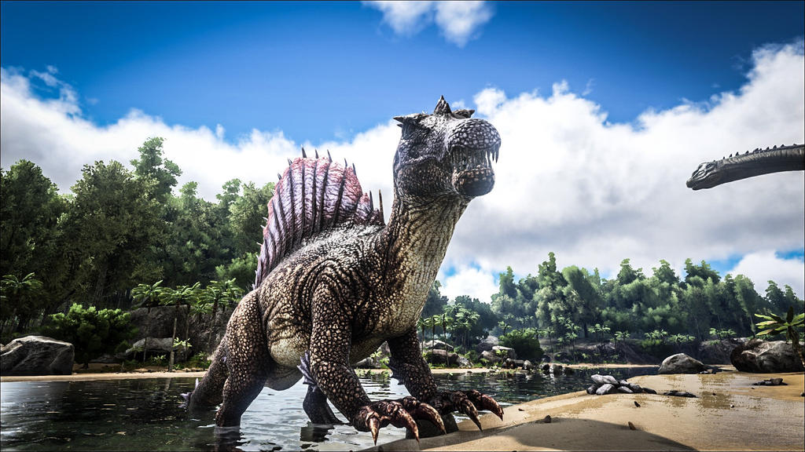
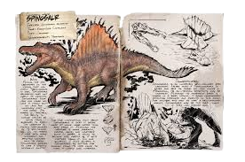

- Species
Spinosaurus aquareliga
- Time
Early-Late Cretaceous
- Diet
Carnivore
- Temperament
Territorial
Spinosaurus
Table of Contents
Overview
This section is intended to be an exact copy of what the survivor Helena Walker, the author of the dossiers, has written. There may be some discrepancies between this text and the in-game creature.

Wild
Among the few carnivores on the Island that can match Tyrannosaurs in size, Spinosaurus aquareliga does not match its ferocity. Spinosaurus' four legs and large sail make it fairly swift on land and incredibly fast in the water. Its marvel is, arguably, the ability to change stances by going from quadruped to biped. The creature is visually distinguished by its spectacular sail. In my travels I have seen many different and brightly coloured sails, as every Spinosaurus appears to have a slightly different palette. The one comforting fact about Spinosaurus is that it seems more at home near water than away from it. Although the creature is more powerful, faster, agile, and insatiable while in water, it tends to become less hostile as it gets farther from it. On one occasion, I only escaped a Spinosaurus by getting far enough from its lake home to make it simply lose interest.
Domesticated
Spinosaurus is an incredibly well-rounded apex carnivore. Faster than a Tyrannosaurus in water and able to travel on land unlike a Megalodon, its all-terrain versatility may be unrivaled. Although its movement speed is slower in a biped stance, it gains considerable attacking strength and mobility in this form.For hunters who wish to have a well-rounded mount, Spinosaurus may be the ideal choice -- if they can acquire one.
Behavior
Spinosaurus is a deadly predator that is usually found roaming the rivers and swamp areas of the island. However, it has a fairly small aggro range when compared to other large carnivores; a territorial creature than a truly predatory one. It spends most of its time romping around and hunting fish and any other creature in or near the water that venture too close, killing prey with their conical teeth and jaws, as well as their hooked claws and strong arms. For those new players who would consider abase along the riverside beaches, assuming them to be safe like ocean beaches, think again. You might end up face-to-face with a 14 metre hypercarnivore.
Taming
Taming a Spinosaurus requires careful planning due to its strength and aggression. Tranquilizers such as Tranq Arrows or Darts are essential, and a high vantage point or fast mount is recommended to stay out of harm's way. Once subdued, it can be fed raw meat, raw prime meat, or its preferred Kibble for efficient taming.
Uses
The Spinosaurus excels in combat and resource gathering. Its ability to move swiftly on land and in water makes it an ideal choice for traversing diverse environments. Additionally, its powerful attacks and stamina make it invaluable in battles and hunting